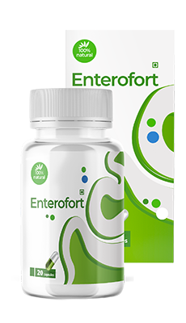

Enterofort ® विशिष्ट रासायनिक दवाइयों से क्यों बेहतर है?
Enterofort

कृमिविज्ञानियों द्वारा प्रमाणित रामबाण औषधि परजीवियों से घर पर छुटकारा पाने के लिये
ये बहुत ही स्वादिष्ट है जिसे बच्चे पसंद करेंगे
इसमें हैं केवल औषधि सम्बन्धी पौधे जिन्हें शुद्ध पर्यावरण से से इकठ्ठा किया गया है.
रासायनिक गोलियों की तुलना में इसके नुकसान नहीं होते हैं, रसायनों से घुमनी, मितली, उल्टी आ सकती है जो लीवर की जैव रासायनिक स्थिति को और भी ख़राब कर देती हैं
ये पूर्ण रूप से प्राकृतिक तथा सुरक्षित विषनाशक औषधि है इसलिये इसका सेवन डॉक्टर के प्रिस्क्रिप्शन के बिना किया जा सकता है